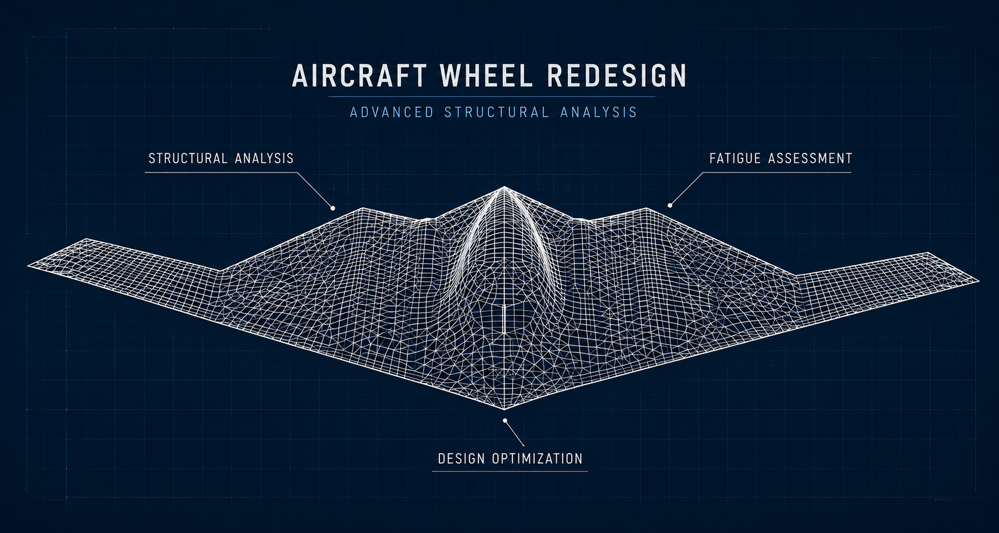

Legacy Requirements
Historical aircraft usage and legacy design parameters had to be translated into a defensible modern loading profile.
Aerospace Structures
Developing a modern replacement for a legacy military aircraft wheel through test-informed loading, mathematical modeling, finite element analysis, and multidisciplinary design iteration.

Project Snapshot
Industry
Military Aerospace
Project Type
Legacy Component Redesign
Primary Role
Structural Analysis and Method Development
Core Disciplines
Test, CAD, Mathematics, FEA and Documentation
The Challenge
A legacy aircraft wheel was being manufactured by a single qualified supplier. As the only available source, the manufacturer was able to increase pricing, creating a growing procurement and sustainment concern for the Air Force.
Rather than reproduce the existing wheel without change, the program pursued a redesigned component that could reduce supplier dependence while incorporating modern engineering improvements.
The replacement wheel was intended to improve fatigue life, simplify assembly, accommodate updated pressure sensing and overfill-protection technology, and interface with a newer tire geometry already used elsewhere.
Engineering Context
Historical aircraft usage and legacy design parameters had to be translated into a defensible modern loading profile.
The updated tire changed the contact geometry, so pressure data from the original configuration could not be applied directly.
Physical tests could not be conducted at ultimate load without risking damage to the hardware and test system.
Structural performance had to be balanced against assembly, sensing, overfill protection, manufacturing and sustainment requirements.
My Role
I developed the structural analysis methodology used to evaluate and refine the redesigned wheel. This included supporting load-profile development, building finite element models, evaluating design iterations, and documenting the analytical basis for engineering decisions.
The most difficult part of my assignment was translating a measured pressure distribution from the legacy wheel and tire configuration to a substantially different wheel and tire geometry.
The available test data represented attainable test loads rather than the ultimate loads required for structural analysis. A direct transfer of the measured pressure values would therefore have been both geometrically and physically inadequate.
To address this, I developed custom mathematical software that represented the tested pressure profile, scaled it to the required ultimate loading condition, and mapped the resulting distribution onto the geometry of the new wheel and tire interface.
Engineering Workflow
Review operational history and legacy design requirements.
Develop representative wheel loading conditions.
Generate pressure-profile data under controlled loading.
Fit a reusable analytical representation to the measured profile.
Scale the pressure field to required structural design loads.
Map the pressure distribution to the new tire and wheel geometry.
Evaluate structural performance and refine the design.
Technical Contributions
Supported development of wheel loads using aircraft history and legacy design parameters.
Converted measured pressure data into a form suitable for structural simulation and design evaluation.
Developed mathematical software for profile fitting, load scaling and geometry translation.
Built and evaluated finite element models under ultimate design conditions.
Used analytical results to support repeated CAD refinement and structural improvement.
Worked across purchasing, cost analysis, CAD, testing, structural analysis and documentation.
Project Value
The resulting methodology enabled the redesigned wheel to be evaluated using realistic pressure distributions derived from physical testing while still addressing the ultimate loads required for finite element analysis.
This approach supported iterative development of a wheel intended to reduce sole-source procurement risk while improving fatigue performance, assembly, maintainability, and integration of newer sensing and overfill technology.
It also created a defensible connection between aircraft requirements, physical testing, mathematical transformation, and structural simulation.
Engineering Reflection
Complex engineering projects are often enabled by solving the problems between disciplines. In this case, the central challenge was not simply creating an accurate finite element model. It was developing a defensible method that connected aircraft loading, physical testing, mathematical modeling, changing geometry, and structural analysis.
This case study describes engineering methods and project context at a general level. Proprietary, export-controlled, aircraft-specific, and program-sensitive technical details have been intentionally excluded.